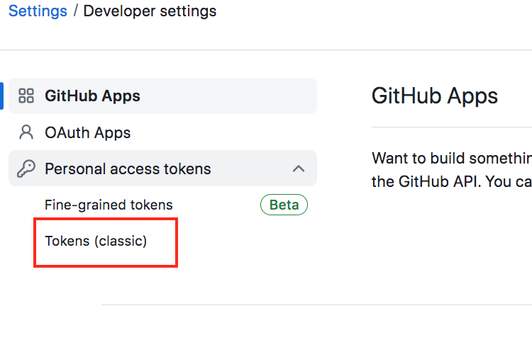

Git and Github#
Git and Github are a must know for programming. This section will cover:
The difference between Git and GitHub
Installing Git and Creating a GitHub account
Using Git and GitHub for personal projects
Using Git and GitHub for collaboration
What is Git?#
Git is a program you can run from the command line. it comes pre-installed on all Linux based machines and Macbooks. If you have a Windows PC you have to download it. Programmers use git so that they can keep a history of all changes made to their code. This means that they can roll back changes as far back as when they started using git with their project. Folders in git are referred to as a repository, or repo, for short. Directories, repositories, and folders pretty much mean the same thing in the world of programming.
Install Git#
Follow these instructions to download git:
For Windows
Install Git Bash
For Macbooks: Git should come pre-installed if you have a Macbook or a Linux based machine but if you need to download it, follow these steps:
Install Homebrew
Go to the command line after installing Homebrew
After installing Homebrew, type
brew install gitin the command line
What is GitHub?#
GitHub is an application of GitHub. It is essentially the public, ‘Social Network’ for programming and programmers. You can share folders on your computer publically and make it available for all to see and potentially use. Its the perfect place to show your work, track your projects/code and collaborate with other people interested in programming. Before moving forward, join the programming geekdom and create a GitHub account
How to Use Git for Your Projects#
1.1. Build a New Directory#
Before getting into git basics, lets open the command line and use the following commands to create a new folder and a new file:
Open Terminal
Command to create a new folder:
mkdir practice
Make the folder your new directory
cd practice
Create a new text file called ‘a’ in your folder
For Mac:
touch a.txtFor Windows:
echo a.txt
Make sure the new file is there:
For Mac:
lsFor Windows:
dir
1.2. Saving Work: Git init - Git add - Git commit#
Now that we have our folder lets start playing around with git:
We are going initialize our folder/repository. This jumpstarts the git process. First, make sure you are still in the practice folder you created. Then copy this into the command line:
git init
Now to specify what you want to save, use
git add. There are two ways to use this command:git add .will save all your changes across all files in your foldergit add [insert filename]will only save work done in the file you specify
In my opinion the first is the safest and only command I use to save all my work because I’d hate to forget saving any changes
Now that we have acknowledged what we want to save. We will use
git commit -m'insert comment'to actually save our progress. It is important to comment well so you will be less confused when trying to go back to see what changes you made and where. Type this into the command line:git commit -m'[insert your comment]'
Now find your txt file in the practice folder, and open it. It should be empty. Type anything you want in there and save the file. Now lets add our changes and save it using the
git commitcommandgit add .git commit -m'[insert your comment]'
1.2. Going back in History: Git –oneline and Git checkout#
To see a log of all of our commits, we can use git log.
git log --oneline
Say we made some mistakes, and would like to go to a previous point in our project, we would use the
git log --onelinelook at our comments to see what version we want to go back to, copy the ID of the commit, then type this into terminal:git checkout <commit-id> .Don’t forget the final ‘ .’ at the end. If you leave this off it will take you to a new “detached head state” where you can make changes and commits, but nothing will be saved and any commits you make will be lost. After running that line and have made sure you want to revert to the old version of your project, add and then commit your changes:git add .git commit -m'detailed explanation of why you made those changes'
How to use GitHub for Your Projects#
Now that we’ve familiarized ourselves with git, lets learn about github. All of the work we done so far has been done locally on our private computer and we can only track our changes using the command line. This is where Github comes in. In the next few steps we’re going to create an online folder on Github that will showcase our work and easily allow us to track our commits.
1.1. Creating a New Online Directory#
Head over to your Github account. You should see a green button called ‘create repository’. Click on it
Now create your repo. Give it the same name as the folder on your computer we are linking it to which, in this case, is our practice folder. Choose to make your repo public or private and then click create repository. Note that you can change whether a repo is public or private at anytime. If you want others to see your work, the repo will have to be public.

1.2. Connecting Local Repo to Online Repo: Git remote add#
You have now created your first repository in github! Now we need to get some things in there. Lets take a look at some instructions GitHub has given us to help us with this endeavor. We’ll skip over the first set of directions since we’re ahead of the curve and instead take a look at the second set. Copy the very first line and head over to Terminal
1.3. Pushing Work Saved Locally onto Github: Git Push#
To push our work onto GitHub, follow these set of instructions:#
Open Terminal
Take the first line of instructions we copied, paste it into the command line, and hit enter
git remote add origin https://github.com/[your_username]/practice.git
Now we have linked our online repository to the repository on our computer. Next we’ll push all of the data in our folder as well as all of the the commits we made using git into our Github repo:
git push -u origin master
WARNING: Account Authentication Process#
At this point you might be prompted for a password because github wants to use to authenticate your account. GitHub will most likely not allow you to use your account password for this process. Instead you will have to use an access token.
1.4 Creating and Using Access Token as Password#
To get an access token head over to your github account, find your profile picture, and scroll down to Settings
Find the Developer Setting tab and click on it
Now under personal access tokens, select Tokens(classic)

Click on Generate New Token and select Generate New token(classic)
Put in a note detailing why the token is being created. For select scopes, check all of the boxes then scroll down and create your token
Now that you have created your token, be sure you copy it and save it. Go back to terminal and paste your token as your password and click enter. Now repeat steps 1 -3 for setting up your remote repository and run your commands.
git remote add origin https://github.com/[your_username]/practice.gitgit push -u origin master
Terminal will tell you if the push request failed or not, but just to be sure, head over to your online repository and refresh it to check
1.5. Exploring Github Repo#
You should now see the file you created along with the time you pushed it to GitHub. We can also see how many commits we have made in this repository and even see the details about each commit when we click on it
Github not only gives details such as commit comments, the commit ID, and the date of the commit, but also allows you to see what your folder looked like at the specific time of the commit.

Furthermore, you can see the content of the file you push into your repository by simply clicking on it. In this case, its just text, but if you were to push a python file or a notebook into Github, it would allow you to see the code you wrote.
If you made it this far with no trouble then congrats! You have cast your very first spell from the large Github book of wizardry. There’s more to learn about Github but these are the most important things you need to know to make it a home for your projects. Github is the best ecosystem to track your progress and save your work so I would highly encourage anyone interested in coding to use it on a recurring basis.
How to Use GitHub to Collaborate with Others#
1.1. Introduction to Branches in Git#
By now we understand the git helps us take snapshots of our project environment, and allows us to revert back in case something goes left and we would like to recover our previous work, but things can get really confusing when more than one persion is working on a project and making changes. Github helps us with managing this process with branches.
A branch is in essence a set of unique code with a unique name. Each repository can have more than one branch. Go to your repository and look at the top of your page. You should see master and 1 branch towards the top.
Master means that this is the main branch that all other branches will come from. It is the official place for the final project being built. Next to master, you should see 1 branch which indicates the master branch is the first and only branch associated with this repository.
When working on your own projects, you can work directly off the master branch. You are the master of the master branch. When you work with a team or collaborate with others on a project, you would never want to touch the master. You would need to to create another branch to do your work
1.2. Creating a New Branch: Git checkout#
Lets play around with this. We are going to pretend that our practice branch is a bigwig project and we will create a new branch to do our work.
Go to terminal and use
git checkoutcommand to create a new branch:git checkout -b [insert name of new branch]
While in the new branch, create a new text file called ‘a-test.txt’:
For Mac:
touch a-test.txtFor Windows:
echo a-test.txt
As sanity check, lets make sure we are tracking the branch we are working on:
git branch
Save the changes you have made in the new branch and push it into github:
git add .git commit -m'[insert comment]'git push origin [new branch name]
1.3. Merging Branches in Github: Git pull#
Head over to your github repo. You should get a notification about the new branch you greated. Click Compare & pull request.
This page will give you the option to view the changes made in this branch and you as the owner of the master file will be able to view the updates and decide wheter or not they are good enough to be included in the master branch. To initiate this click on Create pull request.

You will be led to a new page, and there select Merge pull request to push all the changes done on the new branch to the master branch
Once the you confirm the merge, Github will notify you whether the merge was succesfful or not. You should now see that your master branch now also has the new file you created in your new branch
1.4. Pull Request on Local Repository#
Now that your online master repo is up to date, you must also make sure the repo on you computer is up to date as well. To do this, head back over to terminal and switch out of your new branch and back to the master branch:
git checkout master
Then use the git pull command to pull all the changes made in the online repo to your local repository:
git pull origin master
Use the git push command to check that things are back to normal. If your online repo does not much the repo on your computer, git will throw you an error:
git push origin master
With that last step, you have completed the process of creating a new branch, updated it with new information, and completed the whole process of initiating a pull request to keep both your online repo and local repo up to date. This is not necessary when building your own projects, but it will come in handy if you ever want to collaborate with other teams and people through Github. I hope this was helpful! In case wasn’t, I will leave some links to resources that helped me when figuring out GitHub. It can be a hard application to get your head around but once you do, it will be one of the most helpful tools in your programming journey.